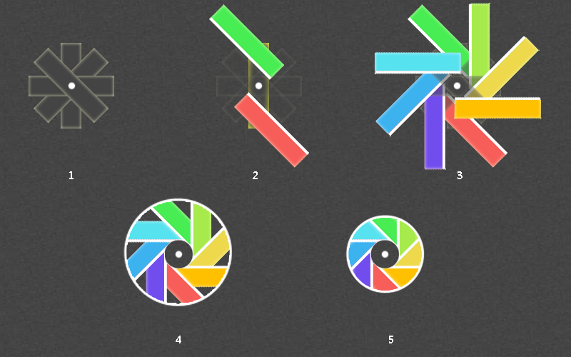

今天做的这个动画叫光盘旋转，名字自己取的。动画的效果估计很多人都很熟悉，就是微信朋友圈里的加载动画。做过前面几个动画，发现其实都一个原理，就是如何将动画的元素如何分离出来。这个动画的实现也很简单，关键点在于如何将元素拼凑成风车形状。然后定义动画的关键帧为rotate 360度，应用于整个元素上，就可以使整个元素旋转起来。案例在请在chrome中查看。

2.1 首先还是定义四个元素，元素的中心为这四个元素组成的圆的圆心。这样定义的目的可以保证元素拼凑成一个正圆。
2.2 在单个元素的头尾各定义一个子元素，子元素旋转一定的角度，使其平行排列，中间刚好留一个正圆的位置。这里用了rotate和translate属性，没有用skew属性，是因为skew方法会使元素拉伸后变小。
2.3 将每个元素的子元素都定义不同的背景色，定义完成后，会形成8个不同的颜色排列，此时元素的形状已经产生了。需要注意的是，最后一个元素需要裁剪下，因为有可能会覆盖第一个元素。案例中第4，8个子元素是分开写的。
2.4 此时在圆心位置定义一个圆，圆的大小刚好覆盖中间的空隙位置。外层容器也设为一个圆，大小为能全部显示所有的背景颜色，多余的部分截断隐藏。
2.5 定义动画，并在外层容器上应用这个动画。这个动画的方式比较简单，就是旋转，直接使用rotate即可。